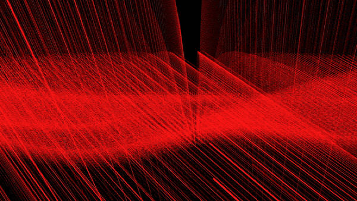
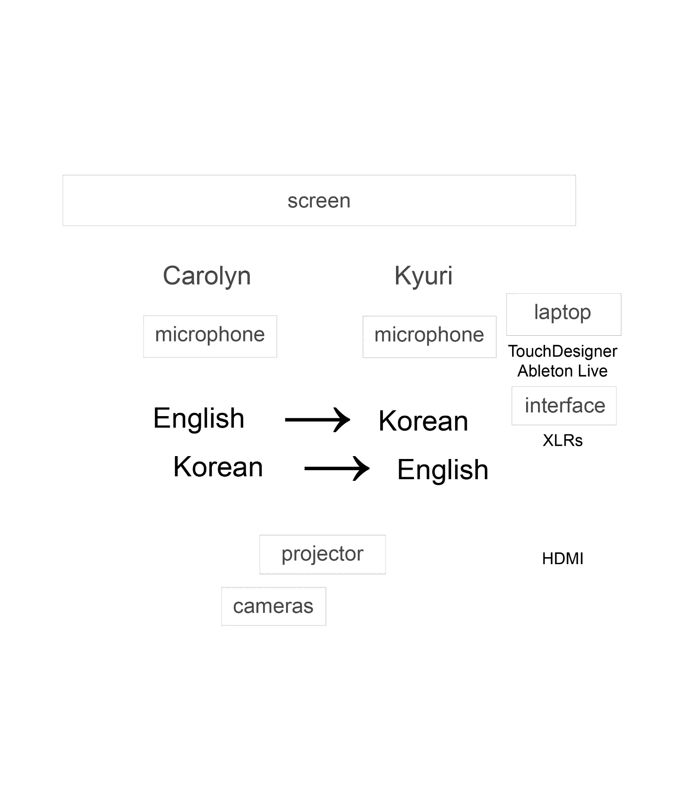
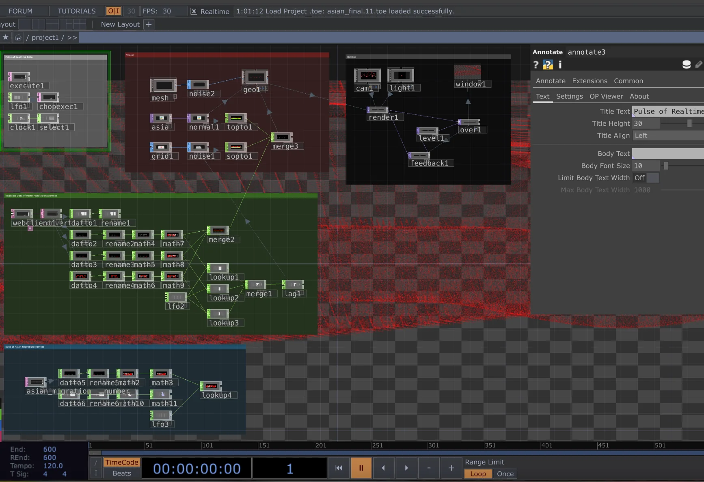
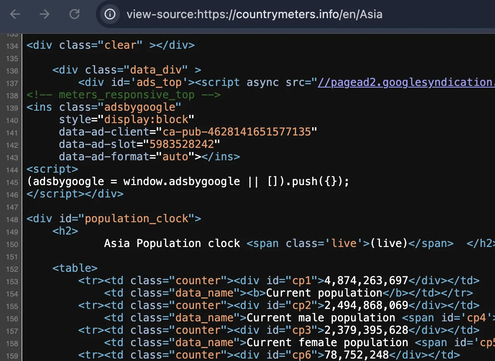
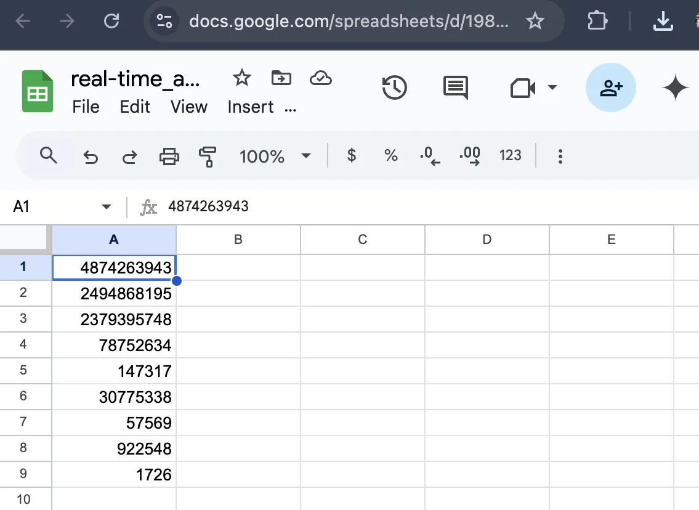
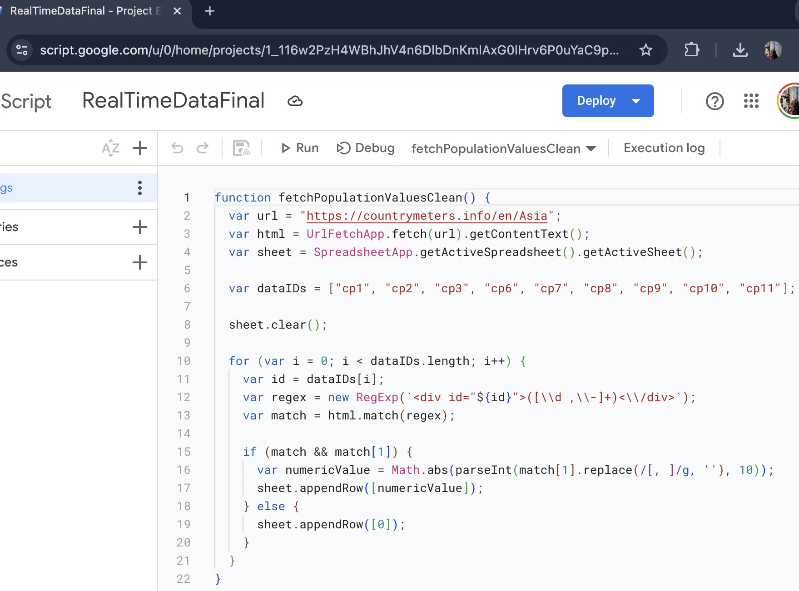
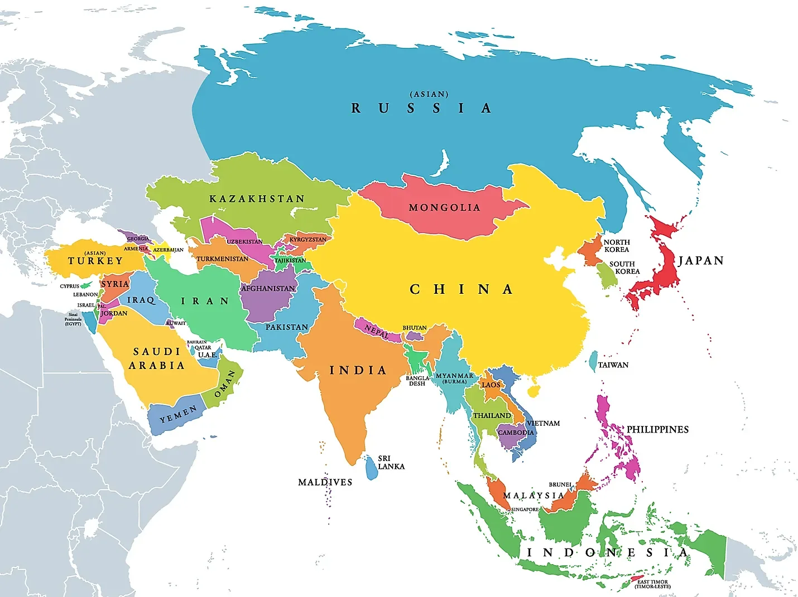
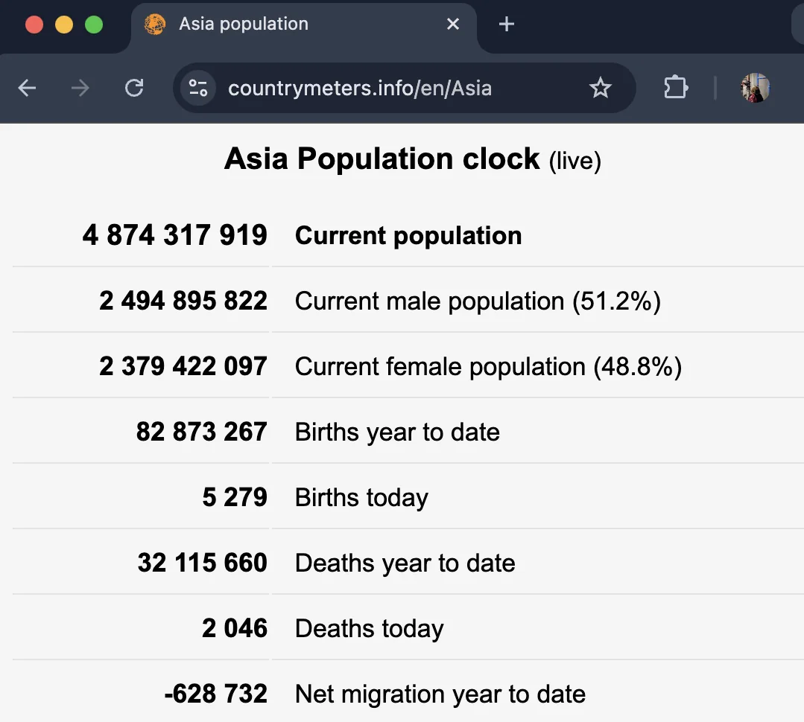
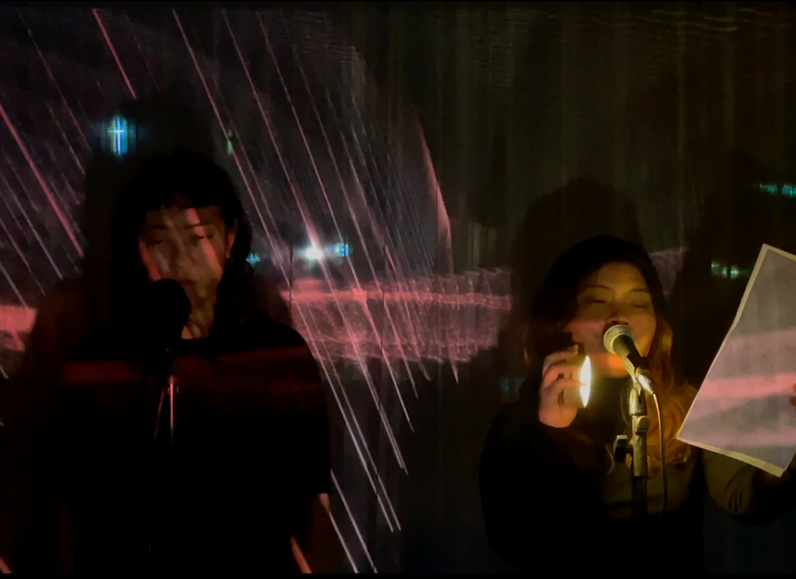

Asian Women vs Women in Asia
Expanding on the ideation of identity as an Asian woman, whether living in Asia or coming from Asia, Carolyn and I had somewhat opposing ideas, which I found thought-provoking. It suggests that anyone who has stayed in an environment longer tends to have deeper experiences and, as a result, can be more critical. I envisioned this form of art by creating real-time data art using TouchDesigner, incorporating the Asian population and its female demographic.









The performance features voices as expressions of opinions, presented in both English and Korean, prioritising the speaker's more comfortable language. Thus, Carolyn speaks in English first, while I begin in Korean. The natural mistakes that may occur while reading the words, along with subtle imperfect localisation, become accidental yet meaningful elements, reflecting the underlying concepts and perspectives.
Figure 1. Map image of the five regions of Asia
Figure 2. Asian population counter
The inserted data also includes the RGB information of the Asian map image from Pariona (2023) (Figure 1) for the geometry instance of the normal, with the female population number influencing the R value of the colour operator, since I intended to create a visualisation of a wave, not in blue but in red, symbolising the colour of blood to represent the essence and vitality of humans, irrespective of surface colour. The population data, originally sourced from Countrymeters (n.d.) (Figure 2), was fetched into Google Sheets and published into the web (Figure 3), prominently influencing this visual, being converted into LFOs, with their frequency cycles determining the wave's shape, flow, and amplitude.
Figure 3. The process of fetching and publishing real-time data
As the data renews every minute to reflect real-time updates, the visual eventually loses its colour and movement at certain points during the performance. In the second part of the performance, the amplitude increases significantly, forming a wave reminiscent of the sea—a metaphorical wave that represents the journey of moving to another country, the migration. As the wave evolves, it transforms into a gate, symbolising the hurdles we face—ones we must open, overcome, or leave closed—to cross boundaries or return to our home country.
Source List
- Countrymeters (n.d.), Asian Population clock (live). Available at: https://countrymeters.info/en/Asia [Accessed 13 December 2024]
- Pariona, A. (2023), What are the five regions of Asia? WorldAtlas, 25 October 2023. Available at: https://www.worldatlas.com/geography/what-are-the-five-regions-of-asia.html [Accessed 13 December 2024]